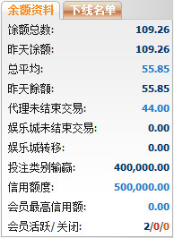
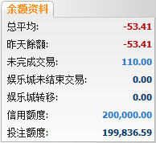

余额资料
定义:
这是总体报告, 帮助总代理非常了解他/她的代理及会员的当前余额, 输赢数额, 支付或收取的数额。

余额资料
用词注解:
-
余额总数: 目前总代理包括转账交易的输赢总额。
-
昨天余额: 总代理输赢总额至昨日。
-
总平均: 总代理需要与上线结算的支付或收取的总额。
-
昨天总平均: 总代理需要与上线结算的支付或收取的总额至昨日。
-
代理未结束交易: 代理在会员投注额的分担根据他/她的占成于进行中/等待中的注单。
-
娱乐城未完成交易: 会员本金总额于待续娱乐城游戏 (此数值只出现在会员将金额调回体育博彩)。
-
娱乐城转移: 会员从体育博彩转移至娱乐城的总额。
-
已用信用额: 代理已给予他/她的会员的总数额。
-
信用额度: 总代理给予代理的信用额度。
-
会员最高信用额: 代理可给予个别会员的最高信用额度。
-
会员活跃/关闭/暂停: 会员数量为活跃/关闭/暂停。
注:
这个部分也支持总代理进行转账操作, 察看进行中的注单, 修改信用额度及修改会员最高信用额度如下:
- 要进行转账交易, 点击昨天余额数。
- 要查看所有进行中的注单, 点击未完成交易数额。
- 要修改信用额度, 点击信用额度数。
- 要修改会员最高信用额, 点击会员最高信用额数。
如何查看下线的余额资料
要查看下线的余额资料, 点击 "会员" 然后选择用户名, 资料如下图显示:

会员的余额资料
用词注解:
-
余额总数: 会员的总输赢。
-
昨天余额: 会员的总输赢至昨日.
-
代理未结束交易: 会员总投注额于进行中/等待中的注单。
-
娱乐城未结束交易: 会员投注总额于待续娱乐城游戏 (此数值只出现在会员将金额调回体育博彩)。
-
娱乐城转移: 会员从体育博彩转移至娱乐城的总额。
-
信用额度: 代理给予会员的最初信用额。
-
投注额度: 会员用于投注的可用信用额。